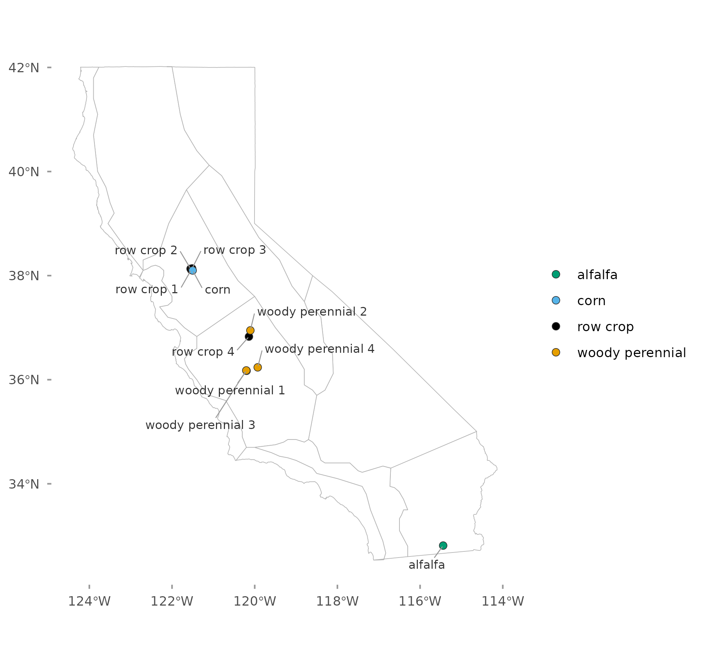
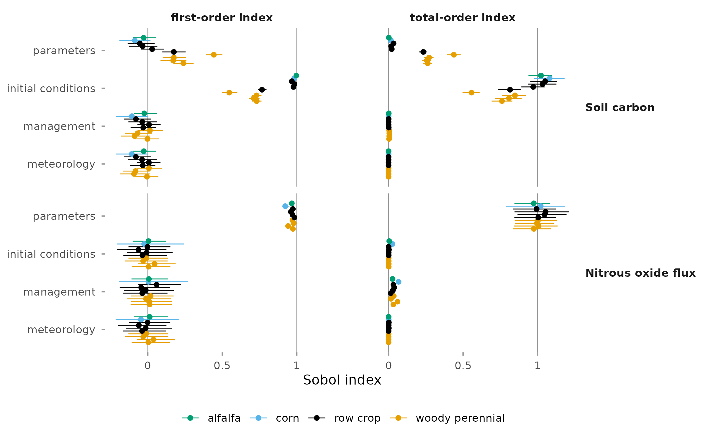
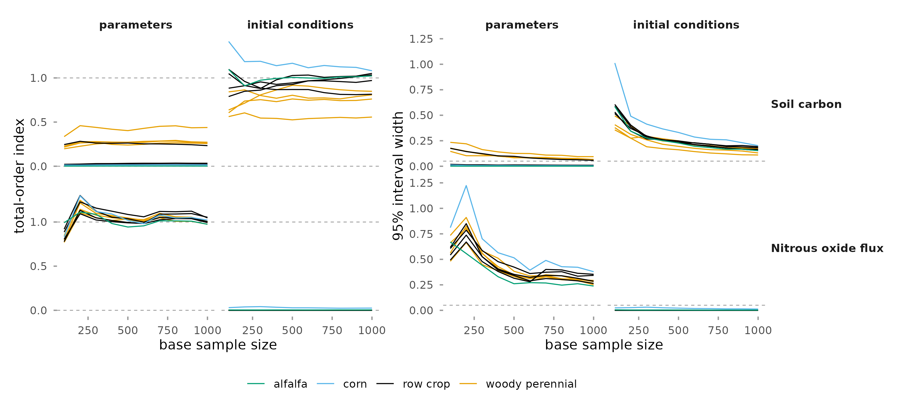

Global Sensitivity Analysis
This report partitions the variance of modeled soil carbon and nitrous oxide flux among four inputs: model parameters, initial conditions, meteorology, and management. The analysis covers 10 design points on California cropland over 2016 to 2023. Results are indices with 95 percent intervals at each design point.
Background
The one-at-a-time analysis, reported separately, ranks individual parameters but holds meteorology, initial conditions, and management at one realization. A variance-based global sensitivity analysis varies all four inputs together and assigns each a share of the output variance (Saltelli et al., 2008).
Two indices are reported for each input. The first-order index is the share of output variance from that input alone. The total-order index adds its interactions with the other inputs. Both are estimated with the Jansen estimators on the design of Saltelli et al. (2010), in which two independent samples of 1,000 rows are recombined so that each input varies alone (Jansen, 1999). Parameters are treated as one input and are not ranked individually.

| Setting | Value |
|---|---|
| Model | SIPNET 2.2.0, nitrogen cycle and anaerobic processes on |
| Design points | 10: 4 woody perennial, 4 row crop, 1 corn, 1 alfalfa |
| Period | 2016 to 2023, reported as the mean over the period |
| Parameters | PFT priors of the statewide inventory runs |
| Meteorology | 10 ERA5 ensemble members |
| Initial conditions | first 20 of the 50 inventory members |
| Management | 20 inventory ensemble members |
| Model runs | 6,000 per design point |
| Intervals | 95 percent, from 1,000 bootstrap resamples |
Variation across design points

For soil carbon, the total-order index of parameters is 0.23 to 0.44 at the five design points in the San Joaquin Valley and at most 0.03 at the other five. For nitrous oxide, the index of parameters is 0.97 to 1.05 at every design point.
The intervals of the largest indices are 0.11 to 0.20 wide for soil carbon and 0.24 to 0.40 wide for nitrous oxide. Estimates above 1 or below 0 have intervals that include that bound.
Precision of the indices

The input with the largest index at each design point and output is the same at every base sample size from 100 to 1,000. Index values are reported with their intervals.
Reporting scope
Indices are reported for soil carbon and nitrous oxide flux. Methane, aboveground biomass, and net ecosystem exchange were also computed. Modeled methane at these design points is near the precision of the model output, and plant carbon is low in these runs, with median aboveground biomass below 0.4 kg C m-2 at every design point; indices for these three outputs are not presented.
Interpretation
These are model-derived results. Parameters are drawn from priors that have not been updated with observations, and each index depends on the prior widths and on the spread of the input ensembles.
The meteorology index measures the spread among the 10 ERA5 members, which differ by at most 0.10 °C in mean air temperature; it is not a sensitivity to climate. The management index measures the spread among the 20 management members; it is not the effect of a change in practice. Initial nitrogen and litter pools are the same in every run, so the initial condition index does not include uncertainty in those pools.
See References for the cited sources.